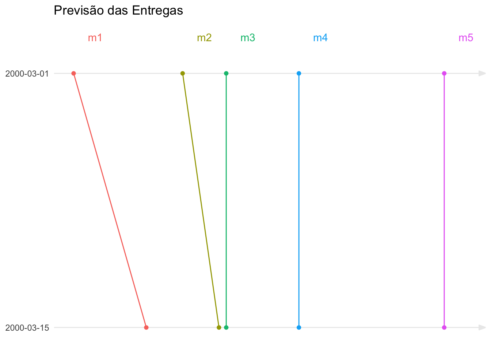
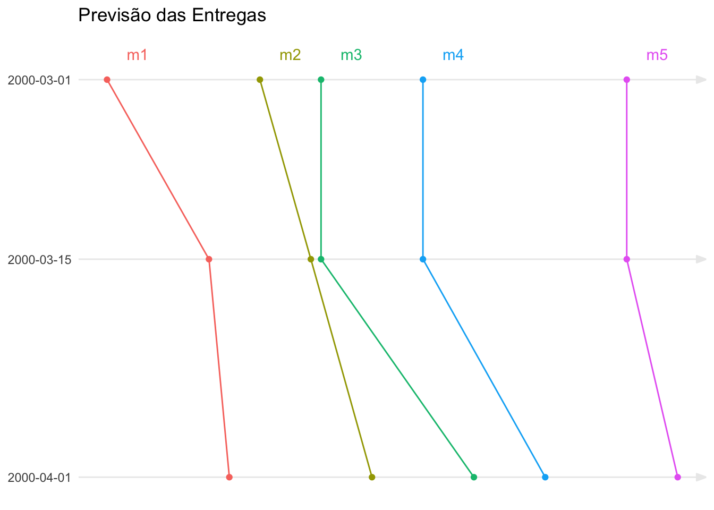

![]()
“Quando acaba?”
Esta é a principal pergunta que um gerente de projetos deve conseguir responder.
Quando uma data de término é estimada é possível inferir outras informações, como o custo final esperado e os benefícios. E, é por isso que as pessoas preferem saber a estimativa da data de término do que outras estimativas.
Ao contrário de outros fatores do projeto - como custos, efetividade do trabalho, ou qualidade do produto - a estimativa do prazo final, em geral, é feita a partir de medições sobre o escopo.
A técnica de Análise do Valor Agregado, por exemplo, utiliza a medição do escopo para fazer estimativas de prazo. Por este motivo, esta técnica gera distorções nas estimativas de performance de prazo e deve ser utilizada com cuidado.
Podemos verificar isto através das equações utilizadas para calcular o índice de performance do custo (CPI - Cost Performance Index), e o índice de performance do prazo (SPI - Schedule Performance Index).
O CPI é calculado através da razão entre o Valor Agregado (EV - Earned Value) e o Custo Real (AC - Actual Cost). Se considerarmos um projeto cujo orçamento foi inicialmente estimado em R$ 100 mil, mas que devido a problemas terminou com custo real final de R$ 200 mil (o dobro), neste caso, percebemos que o CPI reflete o desvio de custo indicando uma performance de 50%:
\[ \begin{align} CPI &= \frac{EV}{AC} \\ &= \frac{100.000}{200.000} \\ &= 0.5 \\ &= 50\% \end{align} \] O valor agregado (EV - Earned Value) ao final seria os estimados R$ 100 mil (quanto valia o que foi entregue dentro da estimativa inicial do orçamento), e o custo real (AC - Actual Cost) seria de R$ 200 mil (quanto custou de fato o que foi entregue), resultando num índice de performance de 50%. Ou seja, para cada real gasto o projeto agregou cinquenta centavos (na perspectiva de valor inicial).
Já o SPI é calculado através da razão entre o Valor Agregado e o Valor Planejado (PV - Planned Value). Se o mesmo projeto além de ter custado o dobro, tivesse durado o dobro do tempo:
\[ \begin{align} SPI &= \frac{EV}{PV} \\ &= \frac{100.000}{100.000} \\ &= 1 \\ &= 100\% \end{align} \]
Isso mesmo, o SPI seria de 100%, sem indicar o atraso. Isto acontece porque a fórmula - apesar do nome - não mede prazo (schedule), ela mede escopo (scope): o projeto levou o dobro do tempo, mas ao final entregou o escopo inicialmente planejado. Estamos comparando escopo entregue (Valor Agregado) contra o escopo planejado (Valor Planejado). E por este motivo, o SPI não é um bom instrumento para estimar a data de término.
Como estimar o prazo de término de um projeto
Para seguirmos na nossa tentativa de conseguir avaliar a data de término do projeto, precisamos de uma outra estratégia.
Uma forma de conseguir estimar o prazo de entrega do projeto é através de um gráfico de tendências de entregas intermediárias. Ou seja, eu ainda estou medindo escopo, mas desta vez numa perspectiva um pouco diferente. Neste post vou apresentar a lógica para utilizar esta técnica - para entender como construir o gráfico veja este link.
Considere uma série de entregas intermediárias do projeto, previstas para ocorrer em datas específicas, aqui representadas pelos indicadores m1, m2, m3, etc. Cada entrega possui um planejamento original e conforme o projeto avança, a espectativa de prazo de entrega é replanejada, conforme mostrado na tabela Table 1.
| Planejamento de entregas | |||||
| Data de Status | Entregas | ||||
|---|---|---|---|---|---|
| m1 | m2 | m3 | m4 | m5 | |
| Mar 1, 2000 | Mar 10, 2000 | Mar 25, 2000 | Mar 31, 2000 | Apr 10, 2000 | Apr 30, 2000 |
Esta tabela deve ser lida da seguinte forma: no dia 1 de março (data e status) a entrega m1 estava prevista para ocorrer no dia 10 de março, a entrega m2 estava prevista para ocorrer no dia 25 de março, a entrega m3 estava prevista para ocorrer no dia 31 de março, e assim por diante.
Periodicamente (vamos considerar revisões quinzenais neste exemplo), os prazos são reavaliados ou a data real de conclusão é registrada.
Assim, considere que no dia 15 de março foi feita uma verificação dos resultados obtidos e constatou-se que m1 não foi entregue na data prevista do dia 10, e que foi replanejado para ser entregue no dia 20. E que, em função deste atraso, não seria possível manter a data de m2 para o dia 25. Neste caso, m2 também teve sua data modificada para ser entregue no dia 30 de março. Apesar destes dois atrasos, vamos considerar que a equipe avaliou que poderia compensar o atraso e manter todas as demais entregas nas datas originalmente previstas.
O resultado disto está mostrado na tabela Table 2.
| Planejamento de entregas | |||||
| Data de Status | Entregas | ||||
|---|---|---|---|---|---|
| m1 | m2 | m3 | m4 | m5 | |
| Mar 1, 2000 | Mar 10, 2000 | Mar 25, 2000 | Mar 31, 2000 | Apr 10, 2000 | Apr 30, 2000 |
| Mar 15, 2000 | Mar 20, 2000 | Mar 30, 2000 | Mar 31, 2000 | Apr 10, 2000 | Apr 30, 2000 |
Os dados desta tabela podem ser colocados num gráfico mostrado na Figure 1 onde os eixos x e y são ambos “tempo”, mostrando a evolução histórica das previsões realizadas.

O eixo y deste gráfico representa as diversas datas de status do projeto, enquanto o eixo x representa a data prevista ou realizada de uma entrega na referida data de status (as datas planejadas/realizadas) estão suprimidas para facilitar a leitura do gráfico).
Estimativa visual das datas de compromisso do projeto
O processo de aferir as datas de entrega e de avaliar o impacto do realizado sobre as entregas futuras deve ser repetido regularmente.
Por exemplo, nossa história segue até a próxima data de avaliação do status no dia 1 de abril. Neste dia, registramos que m1 foi entregue de fato no dia 22 de março. Também m2 não foi entregue e foi replanejado para ser terminado no dia 5 de abril. E, m3 foi replanejado para o dia 15 de abril. Estes atrasos afetaram as previsões de entregas futuras que foram refeitas conforme: m4 foi reestimado para o dia 22 de abril, e m5 para o dia 5 de maio. Estas datas estão na Table 3 abaixo.
| Planejamento de entregas | |||||
| Data de Status | Entregas | ||||
|---|---|---|---|---|---|
| m1 | m2 | m3 | m4 | m5 | |
| Mar 1, 2000 | Mar 10, 2000 | Mar 25, 2000 | Mar 31, 2000 | Apr 10, 2000 | Apr 30, 2000 |
| Mar 15, 2000 | Mar 20, 2000 | Mar 30, 2000 | Mar 31, 2000 | Apr 10, 2000 | Apr 30, 2000 |
| Apr 1, 2000 | Mar 22, 2000 | Apr 5, 2000 | Apr 15, 2000 | Apr 22, 2000 | May 5, 2000 |
Os dados desta tabela podem ser colocados num gráfico mostrado na Figure 2.

Este processo de reavaliação de entregas intermediárias se repete durante a execução do projeto, produzindo um gráfico que com o tempo se assemelha ao mostrado abaixo.
| Planejamento de entregas | |||||
| Data de Status | Entregas | ||||
|---|---|---|---|---|---|
| m1 | m2 | m3 | m4 | m5 | |
| Mar 1, 2000 | Mar 10, 2000 | Mar 25, 2000 | Mar 31, 2000 | Apr 10, 2000 | Apr 30, 2000 |
| Mar 15, 2000 | Mar 20, 2000 | Mar 30, 2000 | Mar 31, 2000 | Apr 10, 2000 | Apr 30, 2000 |
| Apr 1, 2000 | Mar 22, 2000 | Apr 5, 2000 | Apr 15, 2000 | Apr 22, 2000 | May 5, 2000 |
| Apr 15, 2000 | — | Apr 10, 2000 | Apr 20, 2000 | Apr 30, 2000 | May 20, 2000 |
| May 1, 2000 | — | — | Apr 25, 2000 | May 10, 2000 | May 30, 2000 |
| May 15, 2000 | — | — | — | May 25, 2000 | May 30, 2000 |

Duas implicações do processo de avaliação de entregas intermediárias
A visibilidade da evolução dos compromissos intermediários durante a execução do projeto contribuem com 2 fatores importantes.
O primeiro deles é que é possível identificar diferentes padrões de evolução de datas de compromissos, que podem ser mapeados em fatores como tecnologias diferentes, equipes, escopo, etc. E isto fornece percepções que ajudam a equipe a endereçar problemas localizados (ao invés de generalizá-los).
Ou, em sentido contrário ajudam a identificar problemas gerais.
Por exemplo, a Figure 3 mostra que existe uma inclinação nas diversas curvas de entrega dos resultados intermediários muito similar. Isto pode ser um indicativo de que a causa dos atrasos está mais relacionada com uma estimativa original errada da capacidade de realização. Diferente, por exemplo de problemas com a performance da equipe, o que geraria inclinações diferentes para equipes diferentes.
O segundo fator é que a visibilidade das evoluções históricas ajuda na construção de um entendimento e de um ambiente para a discussão de ajustes mais estratégicos.
Parte da dificuldade em negociar cortes ou mudanças de escopo nos projetos, vêm do fato de que há sempre uma sensação de que as variações e atrasos ocorridos não são suficientes para justificar estas mudanças e cortes, principalmente porque é difícil visualizar o impacto destas variações no todo. E como é difícil enxergar estes impactos, escolhe-se a alternativa de vê-los como variações menores cujo impacto deve-se buscar compensar, a fim de se manter o compromisso original”.
Um gráfico como o Figure 3 ajuda na construção de uma visão mais realista do progresso do projeto, o que é muito útil para negociar mudanças e até mesmo cortes no escopo, ou aceitação da prorrogação de datas.
Planejando para poder controlar as entregas
Para poder acompanhar um projeto desta forma é preciso a preparação adequada.
O mais crítico aqui é conseguir criar bons entregáveis intermediários. As principais características destes resultados são:
São mensuráveis na dimensão do negócio. Em geral o indicador de realização é previamente definido junto com a fonte de medição.
Geram valor ao negócio. Quando um resultado é entendido como um valor em si, isto ajuda a evitar que o trabalho relacionado seja alvo de modificações ou tenha seu conteúdo aumentado.
São relativamente isolados de outros trabalhos. Isto é importante para podermos identificar causas de desvios observados. Por exemplo, se uma mesma equipe trabalha em paralelo em resultados diferentes, fica difícil identificar causas das variações que venham a ocorrer.
O uso de gráficos de tendência combinados com um planejamento de entregas intermediárias é uma poderosa ferramenta de planejamento e controle para projetos. A aplicação desta ferramenta é simples e direta, porém a preparação para que a mesma possa ser usada de forma efetiva demanda que o trabalho seja estruturado de forma a colaborar com o uso da ferramenta, o que em geral é difícil, mas não é um problema, já que as diretrizes para isso são consideradas boas práticas de planejamento.
Um último tema que deve ser considerado é se a utilização deste tipo de ferramenta é possível em projetos ágeis. Mas este é um assunto que vou discutir neste outro link.
Citation
@misc{abreu2022,
author = {Marcos Abreu},
title = {Rastreando a performance do trabalho},
date = {2022-11-10},
url = {https://abreums.github.io/posts/2019-11-10-rastreando-a-performance-do-trabalho/},
langid = {pt-br}
}